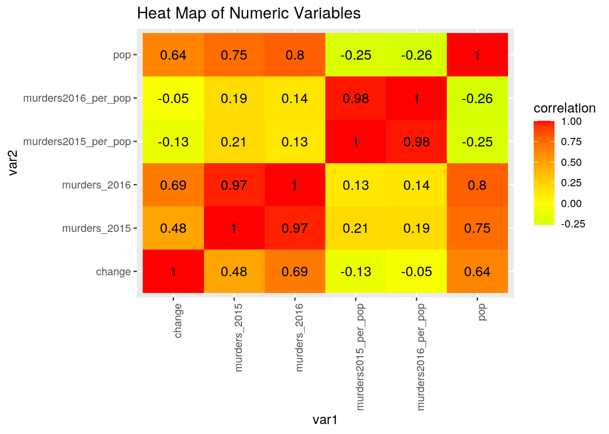
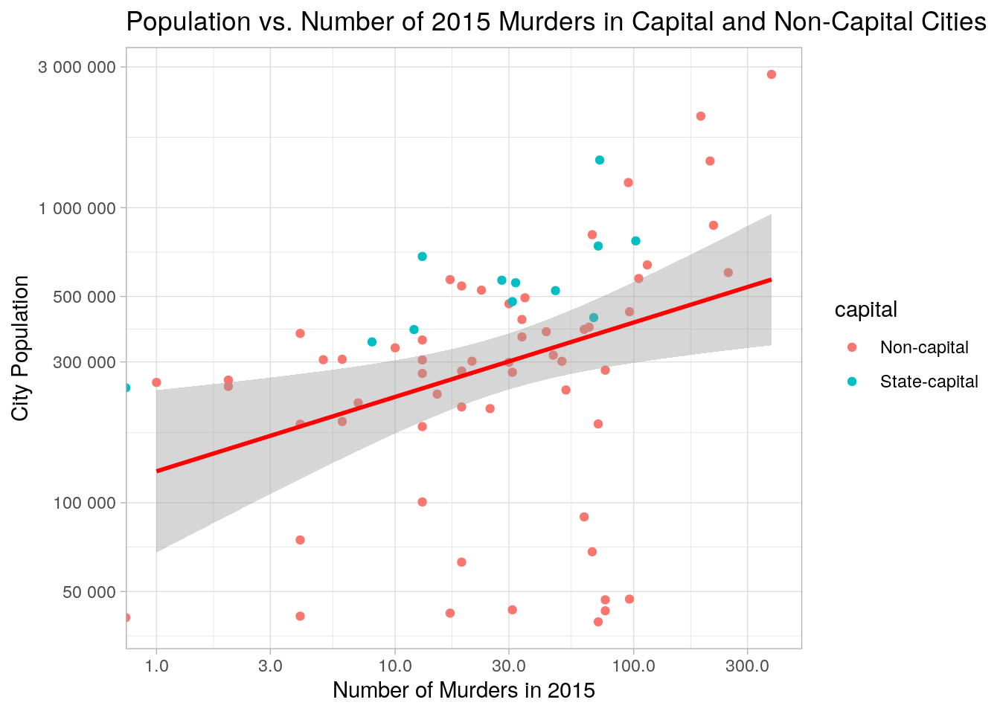
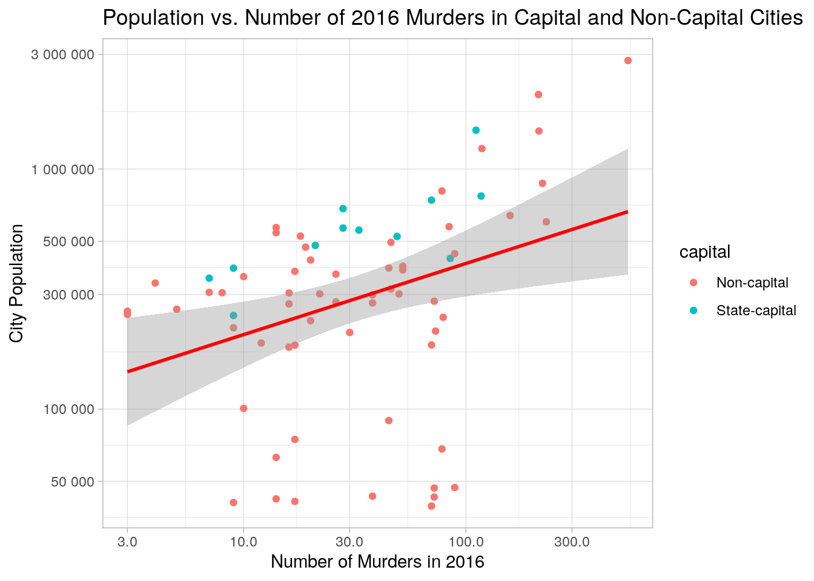
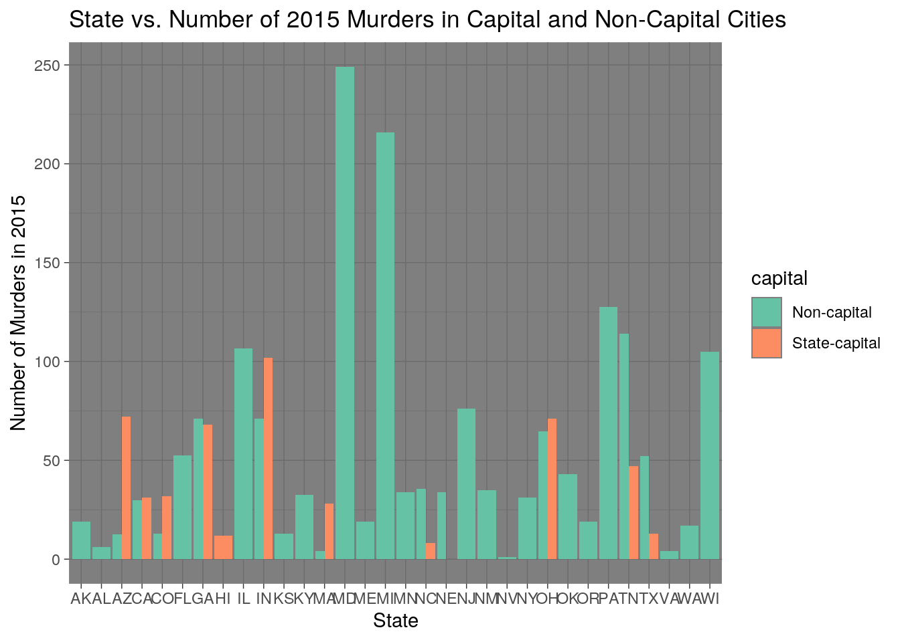
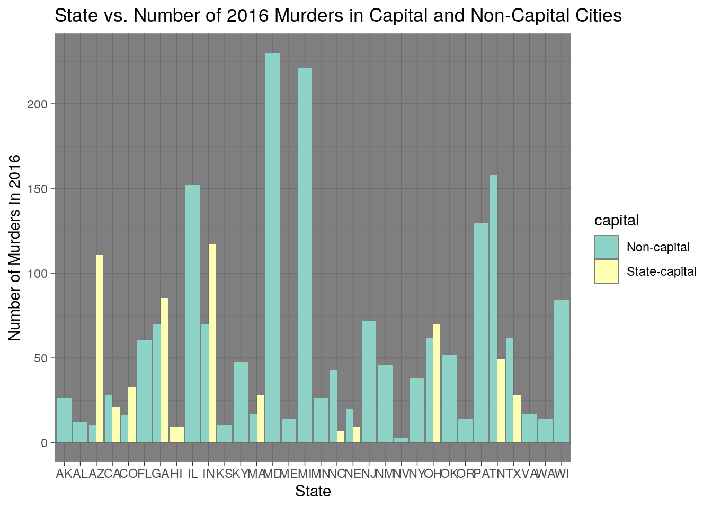
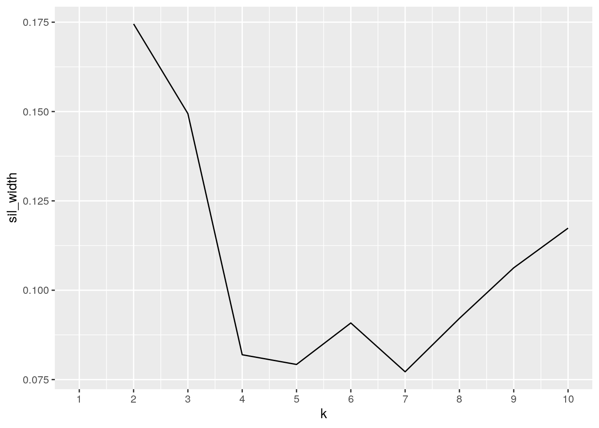
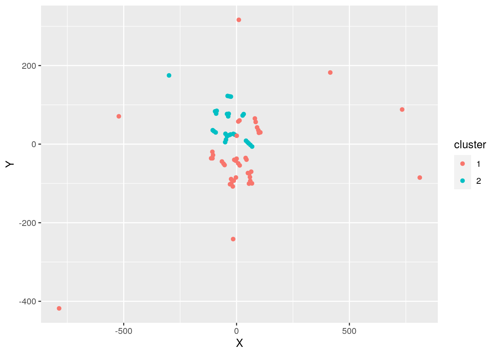

Chelsea Vu (clv743)
. For this Project, I decided to look at the murder prevalence and demographic information of different U.S. cities. My first dataset, “murder_2016_prelim”, includes the number of murders in 2015, the number of murders in 2016 and the change in the number of murders between these two years for various U.S. cities. This dataset also includes the state of each city, the source from which each observation was obtained and the dates that the data are relevant up to. This data was obtained by various police departments and government websites. The second dataset I chose, “us.cities”, includes U.S. cities with a population greater than 40,000, their state, population, coordinates and whether they are a non-capitol city (0), a capitol city (1) or a state capitol(2).
I am interested in observing what correlations might exist between the demographic information of these U.S. cities and their murder statistics. I expect that larger cities will have a larger number of murders but about the same percent change in murders as smaller cities. I also predict that capitol cities will have a greater proportion of murders.
r = getOption("repos")
r["CRAN"] = "http://cran.us.r-project.org"
options(repos = r)
install.packages("dplyr")
library(dplyr)
install.packages("tidyr")
library(tidyr)
install.packages("fivethirtyeight")
library(fivethirtyeight)
data(murder_2016_prelim)
install.packages("maps")
library(maps)
data(us.cities)untidy1 <- murder_2016_prelim %>% pivot_wider(names_from = "state",
values_from = "change")
head(untidy1)## # A tibble: 6 x 39
## city murders_2015 murders_2016 source as_of Illinois Florida Tennessee
## <chr> <int> <int> <chr> <date> <int> <int> <int>
## 1 Chica… 378 536 https:… 2016-10-02 158 NA NA
## 2 Orlan… 19 73 OPD 2016-09-22 NA 54 NA
## 3 Memph… 114 158 MPD 2016-09-11 NA NA 44
## 4 Phoen… 72 111 PPD 2016-08-31 NA NA NA
## 5 Las V… 90 125 http:/… 2016-09-28 NA NA NA
## 6 San A… 78 111 SAPD 2016-09-26 NA NA NA
## # … with 31 more variables: Arizona <int>, Nevada <int>, Texas <int>,
## # Kentucky <int>, Indiana <int>, Georgia <int>, Missouri <int>,
## # California <int>, New Mexico <int>, Oklahoma <int>, Nebraska <int>,
## # Alaska <int>, New York <int>, Alabama <int>, North Carolina <int>,
## # Michigan <int>, Pennsylvania <int>, Colorado <int>, New Jersey <int>,
## # Ohio <int>, Massachusetts <int>, Louisiana <int>, Washington <int>,
## # Hawaii <int>, Kansas <int>, Virginia <int>, Oregon <int>, Minnesota <int>,
## # D.C. <int>, Maryland <int>, Wisconsin <int>tidy1 <- untidy1 %>% pivot_longer(6:39, names_to = "state", values_to = "change") %>%
na.omit()
head(tidy1)## # A tibble: 6 x 7
## city murders_2015 murders_2016 source as_of state change
## <chr> <int> <int> <chr> <date> <chr> <int>
## 1 Chicago 378 536 https://portal.chic… 2016-10-02 Illi… 158
## 2 Orlando 19 73 OPD 2016-09-22 Flor… 54
## 3 Memphis 114 158 MPD 2016-09-11 Tenn… 44
## 4 Phoenix 72 111 PPD 2016-08-31 Ariz… 39
## 5 Las Ve… 90 125 http://www.lvmpd.co… 2016-09-28 Neva… 35
## 6 San An… 78 111 SAPD 2016-09-26 Texas 33The “untidy1” dataset is the untidy version of the “murder_2016_prelim” dataset, created by using “pivot_wider”. This was made tidy again by using the “pivot_longer” function on “untidy1” and creating the “tidy1” dataset, which is the same as the “murder_2016_prelim” dataset.
untidy2 <- us.cities %>% pivot_wider(names_from = "country.etc",
values_from = "capital")
head(untidy2)## # A tibble: 6 x 55
## name pop lat long TX OH CA GA NY OR NM LA
## <chr> <int> <dbl> <dbl> <int> <int> <int> <int> <int> <int> <int> <int>
## 1 Abilene TX 113888 32.4 -99.7 0 NA NA NA NA NA NA NA
## 2 Akron OH 206634 41.1 -81.5 NA 0 NA NA NA NA NA NA
## 3 Alameda CA 70069 37.8 -122. NA NA 0 NA NA NA NA NA
## 4 Albany GA 75510 31.6 -84.2 NA NA NA 0 NA NA NA NA
## 5 Albany NY 93576 42.7 -73.8 NA NA NA NA 2 NA NA NA
## 6 Albany OR 45535 44.6 -123. NA NA NA NA NA 0 NA NA
## # … with 43 more variables: VA <int>, PA <int>, FL <int>, IA <int>, AK <int>,
## # IN <int>, MA <int>, MI <int>, MD <int>, MN <int>, WI <int>, IL <int>,
## # CO <int>, NC <int>, NJ <int>, AL <int>, WA <int>, ME <int>, AZ <int>,
## # TN <int>, NE <int>, MT <int>, MS <int>, ND <int>, MO <int>, ID <int>,
## # UT <int>, KY <int>, CT <int>, OK <int>, NV <int>, WY <int>, SC <int>,
## # WV <int>, NH <int>, AR <int>, RI <int>, DE <int>, HI <int>, KS <int>,
## # VT <int>, SD <int>, DC <int>tidy2 <- untidy2 %>% pivot_longer(5:55, names_to = "country.etc",
values_to = "capital") %>% na.omit()
head(tidy2)## # A tibble: 6 x 6
## name pop lat long country.etc capital
## <chr> <int> <dbl> <dbl> <chr> <int>
## 1 Abilene TX 113888 32.4 -99.7 TX 0
## 2 Akron OH 206634 41.1 -81.5 OH 0
## 3 Alameda CA 70069 37.8 -122. CA 0
## 4 Albany GA 75510 31.6 -84.2 GA 0
## 5 Albany NY 93576 42.7 -73.8 NY 2
## 6 Albany OR 45535 44.6 -123. OR 0The “us.cities” dataset was made untidy by using “pivot_wider”, and this untidy version is called “untidy2”. This was made tidy again by using “pivot_longer” on “untidy2”, leaving the “tidy2” dataset, which is the same as the original “us.cities” dataset.
newus.cities <- us.cities %>% separate(name, into = c("city",
"state")) %>% glimpse## Rows: 1,005
## Columns: 7
## $ city <chr> "Abilene", "Akron", "Alameda", "Albany", "Albany", "Albany…
## $ state <chr> "TX", "OH", "CA", "GA", "NY", "OR", "NM", "LA", "VA", "CA"…
## $ country.etc <chr> "TX", "OH", "CA", "GA", "NY", "OR", "NM", "LA", "VA", "CA"…
## $ pop <int> 113888, 206634, 70069, 75510, 93576, 45535, 494962, 44933,…
## $ lat <dbl> 32.45, 41.08, 37.77, 31.58, 42.67, 44.62, 35.12, 31.29, 38…
## $ long <dbl> -99.74, -81.52, -122.26, -84.18, -73.80, -123.09, -106.62,…
## $ capital <int> 0, 0, 0, 0, 2, 0, 0, 0, 0, 0, 0, 0, 0, 0, 0, 0, 0, 0, 0, 0…newjoin <- full_join(newus.cities, murder_2016_prelim, by = c("city")) %>%
na.omit() %>% glimpse()## Rows: 71
## Columns: 13
## $ city <chr> "Albuquerque", "Anaheim", "Anchorage", "Arlington", "Arli…
## $ state.x <chr> "NM", "CA", "AK", "Heights", "MA", "TX", "VA", "GA", "CO"…
## $ country.etc <chr> "NM", "CA", "AK", "IL", "MA", "TX", "VA", "GA", "CO", "IL…
## $ pop <int> 494962, 334909, 279428, 74763, 41246, 374729, 184603, 424…
## $ lat <dbl> 35.12, 33.84, 61.18, 42.09, 42.42, 32.69, 38.88, 33.76, 3…
## $ long <dbl> -106.62, -117.87, -149.19, -87.98, -71.16, -97.13, -77.10…
## $ capital <int> 0, 0, 0, 0, 0, 0, 0, 2, 0, 0, 2, 0, 0, 2, 0, 0, 0, 0, 0, …
## $ state.y <chr> "New Mexico", "California", "Alaska", "Texas", "Texas", "…
## $ murders_2015 <int> 35, 10, 19, 4, 4, 4, 4, 68, 13, 13, 13, 21, 249, 28, 31, …
## $ murders_2016 <int> 46, 4, 26, 17, 17, 17, 17, 85, 16, 16, 28, 22, 230, 28, 3…
## $ change <int> 11, -6, 7, 13, 13, 13, 13, 17, 3, 3, 15, 1, -19, 0, 7, 7,…
## $ source <chr> "APD", "APD", "APD", "http://www.arlington-tx.gov/police/…
## $ as_of <date> 2016-09-21, 2016-06-27, 2016-09-27, 2016-08-31, 2016-08-…I joined the two datasets based on the common variable of “city”. To join these two datasets, I had to modify “city” ID variable of the “us.cities” dataset so that it included only the city in the name and not the state. I did this by using the “separate” function, and the resulting dataset was called “newus.cities”. This dataset had 1005 observations and 7 variables. The unchanged “murder_2016_prelim” had 79 observations and 7 variables. Finally, I joined the “newus.cities” and the “murder_2016_prelim” datasets using the “full_join” function and the common ID variable, “city”. To remove the cities that only appeared in one of the two datasets, I used “na.omit()” to remove rows containing NAs. I decided to use a full join to preserve all of the variables from both datasets. This final, combined dataset, called “newjoin”, has 13 variables and 71 observations.
newjoin %>% filter(country.etc == "TX") %>% glimpse()## Rows: 7
## Columns: 13
## $ city <chr> "Arlington", "Austin", "Dallas", "Houston", "Laredo", "Pl…
## $ state.x <chr> "TX", "TX", "TX", "TX", "TX", "TX", "Falls"
## $ country.etc <chr> "TX", "TX", "TX", "TX", "TX", "TX", "TX"
## $ pop <int> 374729, 683404, 1216543, 2043005, 218041, 260415, 100616
## $ lat <dbl> 32.69, 30.31, 32.79, 29.77, 27.53, 33.05, 33.90
## $ long <dbl> -97.13, -97.75, -96.77, -95.39, -99.49, -96.75, -98.52
## $ capital <int> 0, 2, 0, 0, 0, 0, 0
## $ state.y <chr> "Texas", "Texas", "Texas", "Texas", "Texas", "Texas", "Ka…
## $ murders_2015 <int> 4, 13, 95, 191, 7, 2, 13
## $ murders_2016 <int> 17, 28, 118, 212, 9, 5, 10
## $ change <int> 13, 15, 23, 21, 2, 3, -3
## $ source <chr> "http://www.arlington-tx.gov/police/wp-content/uploads/si…
## $ as_of <date> 2016-08-31, 2016-08-31, 2016-08-31, 2016-08-31, 2016-09-2…newjoin1 <- newjoin %>% select(-state.x, -state.y, -source, -as_of,
-lat, -long) %>% rename(state = country.etc) %>% glimpse()## Rows: 71
## Columns: 7
## $ city <chr> "Albuquerque", "Anaheim", "Anchorage", "Arlington", "Arli…
## $ state <chr> "NM", "CA", "AK", "IL", "MA", "TX", "VA", "GA", "CO", "IL…
## $ pop <int> 494962, 334909, 279428, 74763, 41246, 374729, 184603, 424…
## $ capital <int> 0, 0, 0, 0, 0, 0, 0, 2, 0, 0, 2, 0, 0, 2, 0, 0, 0, 0, 0, …
## $ murders_2015 <int> 35, 10, 19, 4, 4, 4, 4, 68, 13, 13, 13, 21, 249, 28, 31, …
## $ murders_2016 <int> 46, 4, 26, 17, 17, 17, 17, 85, 16, 16, 28, 22, 230, 28, 3…
## $ change <int> 11, -6, 7, 13, 13, 13, 13, 17, 3, 3, 15, 1, -19, 0, 7, 7,…newjoin1$capital[newjoin1$capital == 0] <- "Non-capital"
newjoin1$capital[newjoin1$capital == 1] <- "Capital"
newjoin1$capital[newjoin1$capital == 2] <- "State-capital"
newjoin1 %>% arrange(desc(murders_2015))## city state pop capital murders_2015 murders_2016 change
## 1 Chicago IL 2830144 Non-capital 378 536 158
## 2 Baltimore MD 602658 Non-capital 249 230 -19
## 3 Detroit MI 871789 Non-capital 216 221 5
## 4 Philadelphia PA 1439814 Non-capital 209 213 4
## 5 Houston TX 2043005 Non-capital 191 212 21
## 6 Memphis TN 639736 Non-capital 114 158 44
## 7 Milwaukee WI 575250 Non-capital 105 84 -21
## 8 Indianapolis IN 771725 State-capital 102 117 15
## 9 Cleveland OH 47123 Non-capital 96 89 -7
## 10 Cleveland OH 443949 Non-capital 96 89 -7
## 11 Dallas TX 1216543 Non-capital 95 118 23
## 12 Newark CA 43018 Non-capital 76 72 -4
## 13 Newark NJ 281378 Non-capital 76 72 -4
## 14 Newark OH 46870 Non-capital 76 72 -4
## [ reached 'max' / getOption("max.print") -- omitted 57 rows ]newjoin1 %>% group_by(state) %>% summarize(mean_murders2015 = mean(murders_2015,
na.rm = T)) %>% arrange(desc(mean_murders2015))## # A tibble: 32 x 2
## state mean_murders2015
## <chr> <dbl>
## 1 MD 249
## 2 MI 216
## 3 PA 128.
## 4 IL 106.
## 5 WI 105
## 6 IN 86.5
## 7 TN 80.5
## 8 NJ 76
## 9 GA 69.5
## 10 OH 65.7
## # … with 22 more rowsnewjoin1 %>% group_by(state) %>% summarize(mean_murders2016 = mean(murders_2016,
na.rm = T)) %>% arrange(desc(mean_murders2016))## # A tibble: 32 x 2
## state mean_murders2016
## <chr> <dbl>
## 1 MD 230
## 2 MI 221
## 3 IL 152.
## 4 PA 130.
## 5 TN 104.
## 6 IN 93.5
## 7 WI 84
## 8 GA 77.5
## 9 NJ 72
## 10 OH 63
## # … with 22 more rowsnewjoin1 %>% group_by(state) %>% summarize(mean_pop = mean(pop,
na.rm = T)) %>% arrange(desc(mean_pop))## # A tibble: 32 x 2
## state mean_pop
## <chr> <dbl>
## 1 PA 878043
## 2 MI 871789
## 3 IL 782346.
## 4 AZ 741356.
## 5 TX 699536.
## 6 MD 602658
## 7 TN 581642.
## 8 WI 575250
## 9 OR 542751
## 10 NM 494962
## # … with 22 more rowsnewjoin2 <- newjoin1 %>% mutate(murders2015_per_pop = murders_2015/pop) %>%
mutate(murders2016_per_pop = murders_2016/pop) %>% glimpse()## Rows: 71
## Columns: 9
## $ city <chr> "Albuquerque", "Anaheim", "Anchorage", "Arlington"…
## $ state <chr> "NM", "CA", "AK", "IL", "MA", "TX", "VA", "GA", "C…
## $ pop <int> 494962, 334909, 279428, 74763, 41246, 374729, 1846…
## $ capital <chr> "Non-capital", "Non-capital", "Non-capital", "Non-…
## $ murders_2015 <int> 35, 10, 19, 4, 4, 4, 4, 68, 13, 13, 13, 21, 249, 2…
## $ murders_2016 <int> 46, 4, 26, 17, 17, 17, 17, 85, 16, 16, 28, 22, 230…
## $ change <int> 11, -6, 7, 13, 13, 13, 13, 17, 3, 3, 15, 1, -19, 0…
## $ murders2015_per_pop <dbl> 7.071250e-05, 2.985886e-05, 6.799605e-05, 5.350240…
## $ murders2016_per_pop <dbl> 9.293643e-05, 1.194354e-05, 9.304723e-05, 2.273852…newjoin2$capital[newjoin2$capital == 0] <- "Non-capital"
newjoin2$capital[newjoin2$capital == 1] <- "Capital"
newjoin2$capital[newjoin2$capital == 2] <- "State-capital"
newjoin2 %>% group_by(state) %>% summarize(mean_2015murders_per_pop = mean(murders2015_per_pop,
na.rm = T)) %>% arrange(desc(mean_2015murders_per_pop)) %>%
glimpse()## Rows: 32
## Columns: 2
## $ state <chr> "IN", "OH", "MD", "ME", "NC", "GA", "NJ", "FL…
## $ mean_2015murders_per_pop <dbl> 9.658905e-04, 6.921466e-04, 4.131697e-04, 3.0…library("knitr")
kable(summary(newjoin2, type = "numeric"))| city | state | pop | capital | murders_2015 | murders_2016 | change | murders2015_per_pop | murders2016_per_pop | |
|---|---|---|---|---|---|---|---|---|---|
| Length:71 | Length:71 | Min. : 39453 | Length:71 | Min. : 0.00 | Min. : 3.00 | Min. :-21.000 | Min. :0.000e+00 | Min. :1.174e-05 | |
| Class :character | Class :character | 1st Qu.: 209826 | Class :character | 1st Qu.: 13.00 | 1st Qu.: 15.00 | 1st Qu.: -3.500 | 1st Qu.:3.959e-05 | 1st Qu.:4.662e-05 | |
| Mode :character | Mode :character | Median : 306351 | Mode :character | Median : 31.00 | Median : 30.00 | Median : 2.000 | Median :8.977e-05 | Median :9.700e-05 | |
| NA | NA | Mean : 434814 | NA | Mean : 51.49 | Mean : 57.24 | Mean : 5.746 | Mean :2.279e-04 | Mean :2.428e-04 | |
| NA | NA | 3rd Qu.: 524408 | NA | 3rd Qu.: 69.50 | 3rd Qu.: 72.00 | 3rd Qu.: 9.000 | 3rd Qu.:1.655e-04 | 3rd Qu.:2.216e-04 | |
| NA | NA | Max. :2830144 | NA | Max. :378.00 | Max. :536.00 | Max. :158.000 | Max. :2.037e-03 | Max. :1.889e-03 |
newjoin2 %>% summarize(mean_pop = mean(pop, na.rm = T), sd_pop = sd(pop),
var_pop = var(pop), quantile_pop = quantile(pop), min_pop = min(pop),
max_pop = max(pop), n_rows = n(), n_dist_pop = n_distinct(pop)) %>%
kable()| mean_pop | sd_pop | var_pop | quantile_pop | min_pop | max_pop | n_rows | n_dist_pop |
|---|---|---|---|---|---|---|---|
| 434814.3 | 454871 | 206907614668 | 39453.0 | 39453 | 2830144 | 71 | 71 |
| 434814.3 | 454871 | 206907614668 | 209826.0 | 39453 | 2830144 | 71 | 71 |
| 434814.3 | 454871 | 206907614668 | 306351.0 | 39453 | 2830144 | 71 | 71 |
| 434814.3 | 454871 | 206907614668 | 524407.5 | 39453 | 2830144 | 71 | 71 |
| 434814.3 | 454871 | 206907614668 | 2830144.0 | 39453 | 2830144 | 71 | 71 |
newjoin2 %>% summarize(mean_murders2015 = mean(murders_2015,
na.rm = T), sd_muders2015 = sd(murders_2015), var_murders2015 = var(murders_2015),
quantile_murders2015 = quantile(murders_2015), min_murders2015 = min(murders_2015),
max_murders2015 = max(murders_2015), n_rows = n(), n_dist_murders2015 = n_distinct(murders_2015)) %>%
kable()| mean_murders2015 | sd_muders2015 | var_murders2015 | quantile_murders2015 | min_murders2015 | max_murders2015 | n_rows | n_dist_murders2015 |
|---|---|---|---|---|---|---|---|
| 51.49296 | 64.94676 | 4218.082 | 0.0 | 0 | 378 | 71 | 45 |
| 51.49296 | 64.94676 | 4218.082 | 13.0 | 0 | 378 | 71 | 45 |
| 51.49296 | 64.94676 | 4218.082 | 31.0 | 0 | 378 | 71 | 45 |
| 51.49296 | 64.94676 | 4218.082 | 69.5 | 0 | 378 | 71 | 45 |
| 51.49296 | 64.94676 | 4218.082 | 378.0 | 0 | 378 | 71 | 45 |
newjoin2 %>% summarize(mean_murders2016 = mean(murders_2016,
na.rm = T), sd_muders2016 = sd(murders_2016), var_murders2016 = var(murders_2016),
quantile_murders2016 = quantile(murders_2016), min_murders2016 = min(murders_2016),
max_murders2016 = max(murders_2016), n_rows = n(), n_dist_murders2016 = n_distinct(murders_2016)) %>%
kable()| mean_murders2016 | sd_muders2016 | var_murders2016 | quantile_murders2016 | min_murders2016 | max_murders2016 | n_rows | n_dist_murders2016 |
|---|---|---|---|---|---|---|---|
| 57.23944 | 78.338 | 6136.842 | 3 | 3 | 536 | 71 | 43 |
| 57.23944 | 78.338 | 6136.842 | 15 | 3 | 536 | 71 | 43 |
| 57.23944 | 78.338 | 6136.842 | 30 | 3 | 536 | 71 | 43 |
| 57.23944 | 78.338 | 6136.842 | 72 | 3 | 536 | 71 | 43 |
| 57.23944 | 78.338 | 6136.842 | 536 | 3 | 536 | 71 | 43 |
newjoin2 %>% summarize(mean_change = mean(change, na.rm = T),
sd_change = sd(change), var_change = var(change), quantile_change = quantile(change),
min_change = min(change), max_change = max(change), n_rows = n(),
n_dist_change = n_distinct(change)) %>% kable()| mean_change | sd_change | var_change | quantile_change | min_change | max_change | n_rows | n_dist_change |
|---|---|---|---|---|---|---|---|
| 5.746479 | 22.50315 | 506.392 | -21.0 | -21 | 158 | 71 | 35 |
| 5.746479 | 22.50315 | 506.392 | -3.5 | -21 | 158 | 71 | 35 |
| 5.746479 | 22.50315 | 506.392 | 2.0 | -21 | 158 | 71 | 35 |
| 5.746479 | 22.50315 | 506.392 | 9.0 | -21 | 158 | 71 | 35 |
| 5.746479 | 22.50315 | 506.392 | 158.0 | -21 | 158 | 71 | 35 |
newjoin2 %>% summarize(mean_murders2015_per_pop = mean(murders2015_per_pop,
na.rm = T), sd_murders2015_per_pop = sd(murders2015_per_pop),
var_murders2015_per_pop = var(murders2015_per_pop), quantile_murders2015_per_pop = quantile(murders2015_per_pop),
min_murders2015_per_pop = min(murders2015_per_pop), max_murders2015_per_pop = max(murders2015_per_pop),
n_rows = n(), n_dist_murders2015_per_pop = n_distinct(murders2015_per_pop)) %>%
kable()| mean_murders2015_per_pop | sd_murders2015_per_pop | var_murders2015_per_pop | quantile_murders2015_per_pop | min_murders2015_per_pop | max_murders2015_per_pop | n_rows | n_dist_murders2015_per_pop |
|---|---|---|---|---|---|---|---|
| 0.0002279 | 0.0004251 | 2e-07 | 0.0000000 | 0 | 0.0020372 | 71 | 70 |
| 0.0002279 | 0.0004251 | 2e-07 | 0.0000396 | 0 | 0.0020372 | 71 | 70 |
| 0.0002279 | 0.0004251 | 2e-07 | 0.0000898 | 0 | 0.0020372 | 71 | 70 |
| 0.0002279 | 0.0004251 | 2e-07 | 0.0001655 | 0 | 0.0020372 | 71 | 70 |
| 0.0002279 | 0.0004251 | 2e-07 | 0.0020372 | 0 | 0.0020372 | 71 | 70 |
newjoin2 %>% summarize(mean_murders2016_per_pop = mean(murders2016_per_pop,
na.rm = T), sd_murders2016_per_pop = sd(murders2016_per_pop),
var_murders2016_per_pop = var(murders2016_per_pop), quantile_murders2016_per_pop = quantile(murders2016_per_pop),
min_murders2016_per_pop = min(murders2016_per_pop), max_murders2016_per_pop = max(murders2016_per_pop),
n_rows = n(), n_dist_murders2016_per_pop = n_distinct(murders2016_per_pop)) %>%
kable()| mean_murders2016_per_pop | sd_murders2016_per_pop | var_murders2016_per_pop | quantile_murders2016_per_pop | min_murders2016_per_pop | max_murders2016_per_pop | n_rows | n_dist_murders2016_per_pop |
|---|---|---|---|---|---|---|---|
| 0.0002428 | 0.0004078 | 2e-07 | 0.0000117 | 1.17e-05 | 0.0018887 | 71 | 71 |
| 0.0002428 | 0.0004078 | 2e-07 | 0.0000466 | 1.17e-05 | 0.0018887 | 71 | 71 |
| 0.0002428 | 0.0004078 | 2e-07 | 0.0000970 | 1.17e-05 | 0.0018887 | 71 | 71 |
| 0.0002428 | 0.0004078 | 2e-07 | 0.0002216 | 1.17e-05 | 0.0018887 | 71 | 71 |
| 0.0002428 | 0.0004078 | 2e-07 | 0.0018887 | 1.17e-05 | 0.0018887 | 71 | 71 |
## SUMMARY STATISTICS WITH GROUPING BY STATE
newjoin2 %>% group_by(state) %>% summarize(mean_pop = mean(pop,
na.rm = T), sd_pop = sd(pop), var_pop = var(pop), quantile_pop = quantile(pop),
min_pop = min(pop), max_pop = max(pop), n_rows = n(), n_dist_pop = n_distinct(pop)) %>%
glimpse()## Rows: 160
## Columns: 9
## Groups: state [32]
## $ state <chr> "AK", "AK", "AK", "AK", "AK", "AL", "AL", "AL", "AL", "AL…
## $ mean_pop <dbl> 279428.0, 279428.0, 279428.0, 279428.0, 279428.0, 188467.…
## $ sd_pop <dbl> NA, NA, NA, NA, NA, NA, NA, NA, NA, NA, 629923.8, 629923.…
## $ var_pop <dbl> NA, NA, NA, NA, NA, NA, NA, NA, NA, NA, 396804013504, 396…
## $ quantile_pop <dbl> 279428.0, 279428.0, 279428.0, 279428.0, 279428.0, 188467.…
## $ min_pop <int> 279428, 279428, 279428, 279428, 279428, 188467, 188467, 1…
## $ max_pop <int> 279428, 279428, 279428, 279428, 279428, 188467, 188467, 1…
## $ n_rows <int> 1, 1, 1, 1, 1, 1, 1, 1, 1, 1, 3, 3, 3, 3, 3, 9, 9, 9, 9, …
## $ n_dist_pop <int> 1, 1, 1, 1, 1, 1, 1, 1, 1, 1, 3, 3, 3, 3, 3, 9, 9, 9, 9, …newjoin2 %>% group_by(state) %>% summarize(mean_murders2015 = mean(murders_2015,
na.rm = T), sd_muders2015 = sd(murders_2015), var_murders2015 = var(murders_2015),
quantile_murders2015 = quantile(murders_2015), min_murders2015 = min(murders_2015),
max_murders2015 = max(murders_2015), n_rows = n(), n_dist_murders2015 = n_distinct(murders_2015)) %>%
glimpse## Rows: 160
## Columns: 9
## Groups: state [32]
## $ state <chr> "AK", "AK", "AK", "AK", "AK", "AL", "AL", "AL", "…
## $ mean_murders2015 <dbl> 19.00000, 19.00000, 19.00000, 19.00000, 19.00000,…
## $ sd_muders2015 <dbl> NA, NA, NA, NA, NA, NA, NA, NA, NA, NA, 35.92121,…
## $ var_murders2015 <dbl> NA, NA, NA, NA, NA, NA, NA, NA, NA, NA, 1290.3333…
## $ quantile_murders2015 <dbl> 19.00, 19.00, 19.00, 19.00, 19.00, 6.00, 6.00, 6.…
## $ min_murders2015 <int> 19, 19, 19, 19, 19, 6, 6, 6, 6, 6, 2, 2, 2, 2, 2,…
## $ max_murders2015 <int> 19, 19, 19, 19, 19, 6, 6, 6, 6, 6, 72, 72, 72, 72…
## $ n_rows <int> 1, 1, 1, 1, 1, 1, 1, 1, 1, 1, 3, 3, 3, 3, 3, 9, 9…
## $ n_dist_murders2015 <int> 1, 1, 1, 1, 1, 1, 1, 1, 1, 1, 3, 3, 3, 3, 3, 8, 8…newjoin2 %>% group_by(state) %>% summarize(mean_murders2016 = mean(murders_2016,
na.rm = T), sd_muders2016 = sd(murders_2016), var_murders2016 = var(murders_2016),
quantile_murders2016 = quantile(murders_2016), min_murders2016 = min(murders_2016),
max_murders2016 = max(murders_2016), n_rows = n(), n_dist_murders2016 = n_distinct(murders_2016)) %>%
glimpse## Rows: 160
## Columns: 9
## Groups: state [32]
## $ state <chr> "AK", "AK", "AK", "AK", "AK", "AL", "AL", "AL", "…
## $ mean_murders2016 <dbl> 26.00000, 26.00000, 26.00000, 26.00000, 26.00000,…
## $ sd_muders2016 <dbl> NA, NA, NA, NA, NA, NA, NA, NA, NA, NA, 58.50641,…
## $ var_murders2016 <dbl> NA, NA, NA, NA, NA, NA, NA, NA, NA, NA, 3423.0000…
## $ quantile_murders2016 <dbl> 26.00, 26.00, 26.00, 26.00, 26.00, 12.00, 12.00, …
## $ min_murders2016 <int> 26, 26, 26, 26, 26, 12, 12, 12, 12, 12, 3, 3, 3, …
## $ max_murders2016 <int> 26, 26, 26, 26, 26, 12, 12, 12, 12, 12, 111, 111,…
## $ n_rows <int> 1, 1, 1, 1, 1, 1, 1, 1, 1, 1, 3, 3, 3, 3, 3, 9, 9…
## $ n_dist_murders2016 <int> 1, 1, 1, 1, 1, 1, 1, 1, 1, 1, 3, 3, 3, 3, 3, 9, 9…newjoin2 %>% group_by(state) %>% summarize(mean_change = mean(change,
na.rm = T), sd_change = sd(change), var_change = var(change),
quantile_change = quantile(change), min_change = min(change),
max_change = max(change), n_rows = n(), n_dist_change = n_distinct(change)) %>%
glimpse()## Rows: 160
## Columns: 9
## Groups: state [32]
## $ state <chr> "AK", "AK", "AK", "AK", "AK", "AL", "AL", "AL", "AL", …
## $ mean_change <dbl> 7.000000, 7.000000, 7.000000, 7.000000, 7.000000, 6.00…
## $ sd_change <dbl> NA, NA, NA, NA, NA, NA, NA, NA, NA, NA, 23.860707, 23.…
## $ var_change <dbl> NA, NA, NA, NA, NA, NA, NA, NA, NA, NA, 569.33333, 569…
## $ quantile_change <dbl> 7.0, 7.0, 7.0, 7.0, 7.0, 6.0, 6.0, 6.0, 6.0, 6.0, -5.0…
## $ min_change <int> 7, 7, 7, 7, 7, 6, 6, 6, 6, 6, -5, -5, -5, -5, -5, -13,…
## $ max_change <int> 7, 7, 7, 7, 7, 6, 6, 6, 6, 6, 39, 39, 39, 39, 39, 9, 9…
## $ n_rows <int> 1, 1, 1, 1, 1, 1, 1, 1, 1, 1, 3, 3, 3, 3, 3, 9, 9, 9, …
## $ n_dist_change <int> 1, 1, 1, 1, 1, 1, 1, 1, 1, 1, 3, 3, 3, 3, 3, 8, 8, 8, …newjoin2 %>% group_by(state) %>% summarize(mean_murders2015_per_pop = mean(murders2015_per_pop,
na.rm = T), sd_murders2015_per_pop = sd(murders2015_per_pop),
var_murders2015_per_pop = var(murders2015_per_pop), quantile_murders2015_per_pop = quantile(murders2015_per_pop),
min_murders2015_per_pop = min(murders2015_per_pop), max_murders2015_per_pop = max(murders2015_per_pop),
n_rows = n(), n_dist_murders2015_per_pop = n_distinct(murders2015_per_pop)) %>%
glimpse()## Rows: 160
## Columns: 9
## Groups: state [32]
## $ state <chr> "AK", "AK", "AK", "AK", "AK", "AL", "AL",…
## $ mean_murders2015_per_pop <dbl> 6.799605e-05, 6.799605e-05, 6.799605e-05,…
## $ sd_murders2015_per_pop <dbl> NA, NA, NA, NA, NA, NA, NA, NA, NA, NA, 2…
## $ var_murders2015_per_pop <dbl> NA, NA, NA, NA, NA, NA, NA, NA, NA, NA, 5…
## $ quantile_murders2015_per_pop <dbl> 6.799605e-05, 6.799605e-05, 6.799605e-05,…
## $ min_murders2015_per_pop <dbl> 6.799605e-05, 6.799605e-05, 6.799605e-05,…
## $ max_murders2015_per_pop <dbl> 6.799605e-05, 6.799605e-05, 6.799605e-05,…
## $ n_rows <int> 1, 1, 1, 1, 1, 1, 1, 1, 1, 1, 3, 3, 3, 3,…
## $ n_dist_murders2015_per_pop <int> 1, 1, 1, 1, 1, 1, 1, 1, 1, 1, 3, 3, 3, 3,…newjoin2 %>% group_by(state) %>% summarize(mean_murders2016_per_pop = mean(murders2016_per_pop,
na.rm = T), sd_murders2016_per_pop = sd(murders2016_per_pop),
var_murders2016_per_pop = var(murders2016_per_pop), quantile_murders2016_per_pop = quantile(murders2016_per_pop),
min_murders2016_per_pop = min(murders2016_per_pop), max_murders2016_per_pop = max(murders2016_per_pop),
n_rows = n(), n_dist_murders2016_per_pop = n_distinct(murders2016_per_pop)) %>%
glimpse()## Rows: 160
## Columns: 9
## Groups: state [32]
## $ state <chr> "AK", "AK", "AK", "AK", "AK", "AL", "AL",…
## $ mean_murders2016_per_pop <dbl> 9.304723e-05, 9.304723e-05, 9.304723e-05,…
## $ sd_murders2016_per_pop <dbl> NA, NA, NA, NA, NA, NA, NA, NA, NA, NA, 3…
## $ var_murders2016_per_pop <dbl> NA, NA, NA, NA, NA, NA, NA, NA, NA, NA, 1…
## $ quantile_murders2016_per_pop <dbl> 9.304723e-05, 9.304723e-05, 9.304723e-05,…
## $ min_murders2016_per_pop <dbl> 9.304723e-05, 9.304723e-05, 9.304723e-05,…
## $ max_murders2016_per_pop <dbl> 9.304723e-05, 9.304723e-05, 9.304723e-05,…
## $ n_rows <int> 1, 1, 1, 1, 1, 1, 1, 1, 1, 1, 3, 3, 3, 3,…
## $ n_dist_murders2016_per_pop <int> 1, 1, 1, 1, 1, 1, 1, 1, 1, 1, 3, 3, 3, 3,…newjoin2 %>% group_by(state, capital) %>% summarize(mean_pop = mean(pop,
na.rm = T), sd_pop = sd(pop), var_pop = var(pop), min_pop = min(pop),
max_pop = max(pop), n_rows = n(), n_dist_pop = n_distinct(pop)) %>%
glimpse()## Rows: 43
## Columns: 9
## Groups: state [32]
## $ state <chr> "AK", "AL", "AZ", "AZ", "CA", "CA", "CO", "CO", "FL", "GA",…
## $ capital <chr> "Non-capital", "Non-capital", "Non-capital", "State-capital…
## $ mean_pop <dbl> 279428.0, 188467.0, 386591.5, 1450884.0, 274024.4, 480392.0…
## $ sd_pop <dbl> NA, NA, 196118.19, NA, 154742.08, NA, NA, NA, 314942.31, NA…
## $ var_pop <dbl> NA, NA, 3.846234e+10, NA, 2.394511e+10, NA, NA, NA, 9.91886…
## $ min_pop <int> 279428, 188467, 247915, 1450884, 40805, 480392, 304641, 556…
## $ max_pop <int> 279428, 188467, 525268, 1450884, 472517, 480392, 304641, 55…
## $ n_rows <int> 1, 1, 2, 1, 8, 1, 1, 1, 4, 1, 1, 1, 4, 1, 1, 1, 2, 1, 1, 1,…
## $ n_dist_pop <int> 1, 1, 2, 1, 8, 1, 1, 1, 4, 1, 1, 1, 4, 1, 1, 1, 2, 1, 1, 1,…newjoin2cormat <- newjoin2 %>% select_if(is.numeric) %>% cor(use = "pair")
kable(newjoin2cormat)| pop | murders_2015 | murders_2016 | change | murders2015_per_pop | murders2016_per_pop | |
|---|---|---|---|---|---|---|
| pop | 1.0000000 | 0.7451756 | 0.8005471 | 0.6362003 | -0.2497521 | -0.2642073 |
| murders_2015 | 0.7451756 | 1.0000000 | 0.9678577 | 0.4831888 | 0.2054960 | 0.1897713 |
| murders_2016 | 0.8005471 | 0.9678577 | 1.0000000 | 0.6878489 | 0.1343065 | 0.1421998 |
| change | 0.6362003 | 0.4831888 | 0.6878489 | 1.0000000 | -0.1255376 | -0.0526764 |
| murders2015_per_pop | -0.2497521 | 0.2054960 | 0.1343065 | -0.1255376 | 1.0000000 | 0.9838140 |
| murders2016_per_pop | -0.2642073 | 0.1897713 | 0.1421998 | -0.0526764 | 0.9838140 | 1.0000000 |
First all 6 dplyr functions were used to analyze the data. The “filter” function was used to filter and view the dataset with only cities in Texas. The “select” function was used to permanently remove the rows “state.x” and “state.y”, which were repeats of the column “country.etc”, and also to remove the rows “source”, “as_of”, “lat” and “long”. The “rename” function was used to change the column title “country.etc” to “state”. The “arrange” function was first used to arrange cities by most to least number of murders in 2015. It can be seen that Chicago had the greatest number of 2015 murders. By using “group_by” to group by state, then using “summarize” to find the mean murders in 2015 of each state, and finally using arrange to arrange the mean 2015 murders from greatest to least, it can be seen that Maryland has the greatest average murders in 2015, followed by Michigan and Pennsylvania. Using the same functions, I arranged the states by greatest to least mean population size. Michigan, Pennsylvania and Illinois had the greatest average population. Suprisingly, Maryland, which had the greatest mean murders in 2015, was not among the top 5 most populous states. This goes against my prediction that greater population would correlate with a greater number of murders. I then used the “mutate” function to create the new variables “murders2015_per_pop” and “murders2016_per_pop”, which describe the number of murders as a proportion of each city’s population. By using the “group_by”, “summarize” and "arrange functions, I found that Indiana had the greatest average murders per person in 2015, followed by Ohio and Maryland.
I then computed the summary statistics of each numeric variable, using the “mean”, “sd”, “var”, “quantile”, “min”, “max”, “n” and “n_distinct” functions within the “summarize” function. I laid these statistics out in a table using the “kable” function. I followed the same procedure to compute the summary statistics after grouping by state. Not suprisingly, there were very large standard deviations and variances for each of the variables, which makes sense given the variability of city statistics. The exception to this came when grouping by state and recieving “NA” for the standard devation and variance of some states, such as Arkansas. This was because some states were only represented by 1 city in this dataset and therefore there was no standard deviation/variability within that state’s data. I also grouped by both state and capital status, and computed population statistics. For all states having capital and non-capital cities, except for Tennesee, the capital city had a greater mean population compared to the state’s non-captial cities. Lastly, I created a correlation matrix of my numeric variables, called “newjoin2cormat”.
library(tibble)
tidycor <- newjoin2cormat %>% as.data.frame %>% rownames_to_column("var1") %>%
pivot_longer(-1, names_to = "var2", values_to = "correlation")
tidycor %>% arrange(desc(correlation))## # A tibble: 36 x 3
## var1 var2 correlation
## <chr> <chr> <dbl>
## 1 pop pop 1
## 2 murders_2015 murders_2015 1
## 3 murders_2016 murders_2016 1
## 4 change change 1
## 5 murders2015_per_pop murders2015_per_pop 1
## 6 murders2016_per_pop murders2016_per_pop 1
## 7 murders2015_per_pop murders2016_per_pop 0.984
## 8 murders2016_per_pop murders2015_per_pop 0.984
## 9 murders_2015 murders_2016 0.968
## 10 murders_2016 murders_2015 0.968
## # … with 26 more rowslibrary(ggplot2)
tidycor %>% ggplot(aes(var1, var2, fill = correlation)) + geom_tile() +
ggtitle("Heat Map of Numeric Variables") + scale_fill_gradient2(low = "green",
mid = "yellow", high = "red") + geom_text(aes(label = round(correlation,
2)), color = "black", size = 4) + theme(axis.text.x = element_text(angle = 90,
hjust = 1))
newjoin2 %>% ggplot(aes(murders_2015, pop, color = capital)) +
geom_point() + ggtitle("Population vs. Number of 2015 Murders in Capital and Non-Capital Cities") +
xlab("Number of Murders in 2015") + ylab("City Population") +
scale_x_log10(labels = scales::number, n.breaks = 7) + scale_y_log10(labels = scales::number,
n.breaks = 7) + geom_smooth(method = "lm", formula = y ~
x, colour = "red") + theme_light()
newjoin2 %>% ggplot(aes(murders_2016, pop, color = capital)) +
geom_point() + ggtitle("Population vs. Number of 2016 Murders in Capital and Non-Capital Cities") +
xlab("Number of Murders in 2016") + ylab("City Population") +
scale_x_log10(labels = scales::number, n.breaks = 7) + scale_y_log10(labels = scales::number,
n.breaks = 7) + geom_smooth(method = "lm", formula = y ~
x, colour = "red") + theme_light() For my first set of plots, I decided to use a scatterplot to look at the number of murders in 2015/2016 versus the population size of each city. The color of the points are colored based on whether the city was a capital or non-captial city. To further evaluate the relationship between city population and the number of 2015/2016 murders, I fitted a linear regression line to the points. Looking at this regression line, it can be seen that there is a slight, positive linear relationship between the population size and the number of murders in a city.When focusing on the capital status of the cities, it can be seen that capital cities tend to have a higher city population. On the other hand however, capital-status does not appear to have any effect on the number of murders.
newjoin2 %>% ggplot(aes(x = state, y = murders_2015, fill = capital)) +
geom_bar(position = "dodge", stat = "summary") + ggtitle("State vs. Number of 2015 Murders in Capital and Non-Capital Cities") +
ylab("Number of Murders in 2015") + xlab("State") + scale_fill_brewer(palette = "Set2") +
theme_dark()
newjoin2 %>% ggplot(aes(x = state, y = murders_2016, fill = capital)) +
geom_bar(position = "dodge", stat = "summary") + ggtitle("State vs. Number of 2016 Murders in Capital and Non-Capital Cities") +
ylab("Number of Murders in 2016") + xlab("State") + scale_fill_brewer(palette = "Set3") +
theme_dark() The second set of variables I decided to look at were state, number of 2015/2016 murders and capital status. I placed these variables on a grouped bar plot, where I could see the average number of 2015/2016 murders for the capital and non-capital cities of each state. Average number of murders was computed using the “stat=summary” function. By looking at both the 2015 and 2016 plots, it can be seen that the highest average number of murders occured in Maine and Michigan for both years. For states represented by both capital and non-capital cities, it appears that the average number of murders is independent of whether the city is a capital city or non-capital city. This supports what was found from the scatterplots of city population, number of murders and capital status.
library(tidyverse)
library(cluster)
gowdat <- newjoin2 %>% select(city, pop, murders_2015, murders_2016,
change) %>% mutate_if(is.character, as.factor)
gower1 <- daisy(gowdat, metric = "gower")
sil_width <- vector()
for (i in 2:10) {
pam_fit <- pam(gower1, diss = TRUE, k = i)
sil_width[i] <- pam_fit$silinfo$avg.width
}
ggplot() + geom_line(aes(x = 1:10, y = sil_width)) + scale_x_continuous(name = "k",
breaks = 1:10)
pam1 <- pam(gower1, k = 2, diss = T)
pam1## Medoids:
## ID
## [1,] "6" "35"
## [2,] "50" "613"
## Clustering vector:
## 7 20 21 33 34 35 36 41 48 49 50 53 55 98 125 126 161 173 180 184
## 1 1 1 1 1 1 1 2 1 1 1 1 2 1 1 1 1 2 2 2
## 185 197 198 199 225 247 250 260 337 368 395 411 413 422 432 433 486 504 506 507
## 2 2 2 2 2 1 2 1 1 1 1 1 2 2 2 2 1 1 1 1
## 522 549 558 559 567 568 576 601 612 613 614 642 650 655 693 694 701 705 720 721
## 2 2 2 2 2 1 1 2 2 2 2 2 1 1 2 2 2 1 1 1
## 732 756 778 833 834 873 907 919 921 987 988
## 1 1 1 1 1 1 1 1 1 1 1
## Objective function:
## build swap
## 0.2434865 0.2389481
##
## Available components:
## [1] "medoids" "id.med" "clustering" "objective" "isolation"
## [6] "clusinfo" "silinfo" "diss" "call"pam1$silinfo$avg.width## [1] 0.1745174library(Rtsne)
tsne_obj <- Rtsne(gower1, is_distance = TRUE, perplexity = 2)
tsne_data <- tsne_obj$Y %>% data.frame() %>% setNames(c("X",
"Y")) %>% mutate(cluster = factor(pam1$clustering))
ggplot(aes(x = X, y = Y), data = tsne_data) + geom_point(aes(color = cluster))
Since I wanted to evaluate both numeric and categorical data, I used gower dissimilarities for my PAM clustering. First, I grabbed the variables I wanted to use in my cluster using the “select” function and turned any characters into factors using the “mutate_if” function. I named this new dataset “gowdat”. I then computed the gower distances using the “daisy” function and created a vector called “gower1”. I ran the “pam” function on these gower dissimilarities to find the ideal number of clusters for running PAM. The ideal number of clusters was 2 becuase had the highest highest average silhouette width, which gives the most separated and most cohesive clusters. PAM was then run using 2 clusters. Silhouette width was found to be 0.175 and because this was less than 0.25, this means that no substantial structure was found. This is expected given the results of the plots and correlation matrix found previously. Finally, I created a visualization of the clusters using the “Rtsne” and “ggplot” functions. In this plot, it can be seen that the clusters are not very separated .